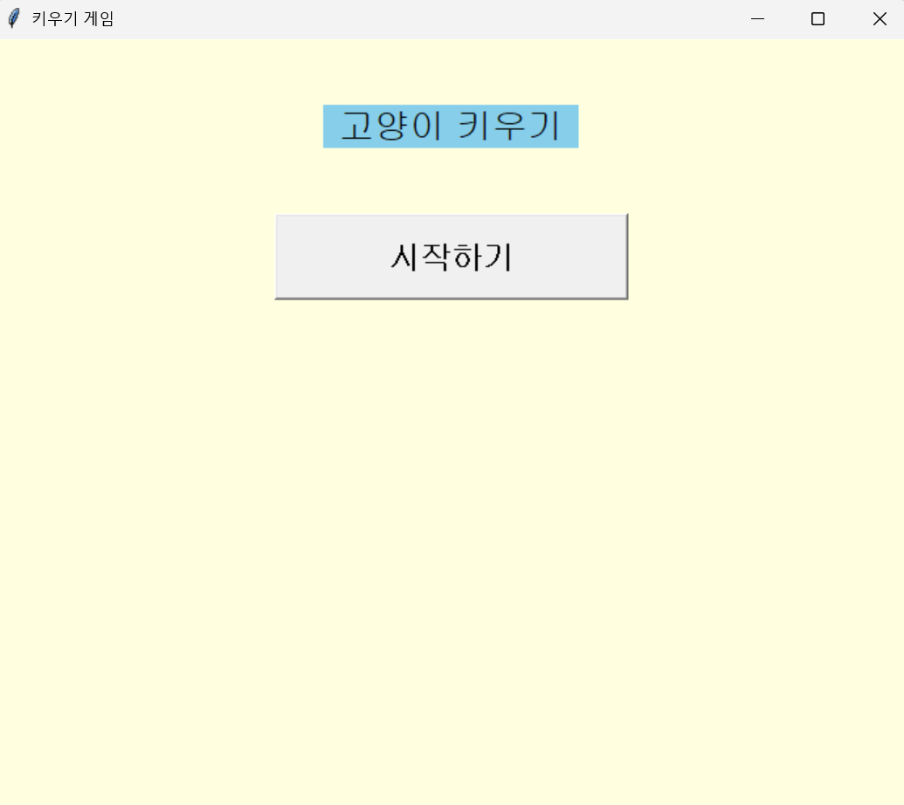
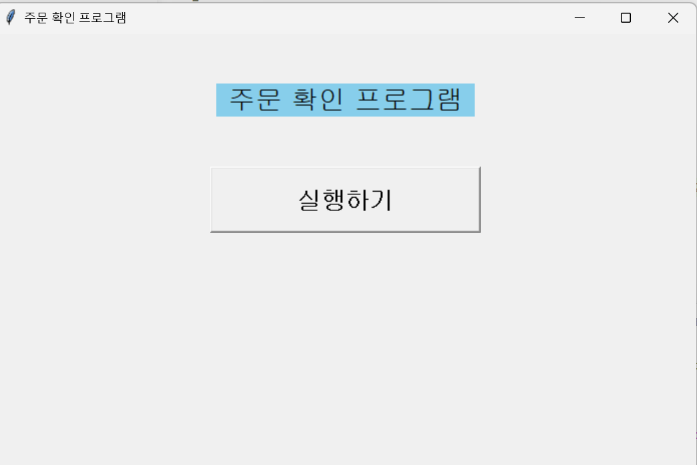

3종류의 고양이 중에서 1마리를 선택한 후 이름을 정하고 밥, 산책, 목욕, 게임(스네이크) 등으로
고양이의 레벨을 올려 고양이가 아기->중묘->성묘 순서로 키우고 다 키운 후에는 다음 고양이를
키울 건지에 대한 화면이 뜬다. 레벨이 올라갈 때 마다 고양이의 모습도 바뀐다.

가게로 주문이 들어오면 그 주문이 처음인지 아니면 몇 번째 주문인지 확인하여
화면에 출력한 후 가게에서 얼마나 멀리 있는지 확인한 후에 자전거로 몇 분이나
걸리는지 출력한다. 자전거로 7분이상 걸리면 자동으로 라이더를 잡는 화면으로 바뀐다
